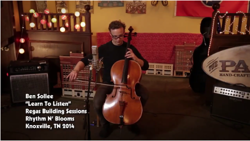
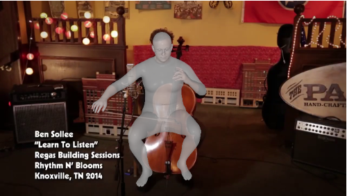
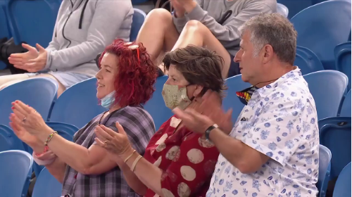
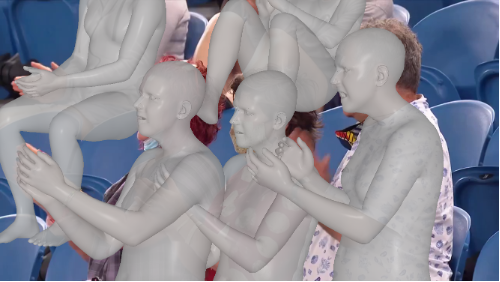
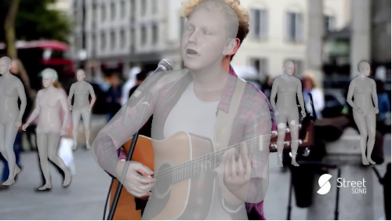
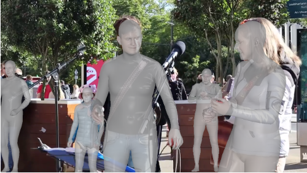

Expressive human pose and shape estimation (a.k.a. 3D whole-body mesh recovery) involves the human body, hand, and expression estimation. Most existing methods have tackled this task in a two-stage manner, first detecting the human body part with an off-the-shelf detection model and then inferring the different human body parts individually. Despite the impressive results achieved, these methods suffer from 1) loss of valuable contextual information via cropping, 2) introducing distractions, and 3) lacking inter-association among different persons and body parts, inevitably causing performance degradation, especially for crowded scenes. To address these issues, we introduce a novel all-in-one-stage framework, AiOS, for multiple expressive human pose and shape recovery without an additional human detection step. Specifically, our method is built upon DETR, which treat multi-person whole-body mesh recovery task as a progressive set prediction problem with various sequential detection. We devise the decoder tokens and extend them to our task. Specifically, we first employ a human token to probe a human location in the image and encode global features for each instance, which provides a coarse location for the later transformer block. Then, we introduce a joint-related token to probe the human joint in the image and encoder a fine-grained local feature, which is especially important in occluded scenarios. This straightforward but effective model outperforms previous state-of-the-art methods by a 9% reduction in NMVE on AGORA, a 30% reduction in PVE on EHF, a 10% reduction in PVE on ARCTIC, and a 3% reduction in PVE on EgoBody.
a) Top-down, multi-stage methods, typically use detectors to detect humans, then use different networks to regress body parts on cropped images. (b) Top-down, one-stage methods, use only one network for regression but still require detectors and rely on the cropped image. (c) Our all-in-one-stage pipeline, end-to-end human detection, and regression on full frame.
AiOS performs human localization and SMPL-X estimation in a progressive manner. It is composed of (1) the body localization stage that predicts coarse human location; (2) the Body refinement stage that refines body features and produces face and hand locations; (3) the Whole-body Refinement stage that refines whole-body features and regress SMPL-X parameters.


From left to right: 1. ROMP, 2. BEV, 3. AiOS (Ours)
This project is supported by the Hong Kong Innovation and Technology Commission (InnoHK Project CIMDA). It is also supported by the Ministry of Education, Singapore, under its MOE AcRF Tier 2 (MOET2EP20221- 0012), NTU NAP, and under the RIE2020 Industry Alignment Fund - Industry Collaboration Projects (IAF-ICP) Funding Initiative, as well as cash and in-kind contribution from the industry partner(s).